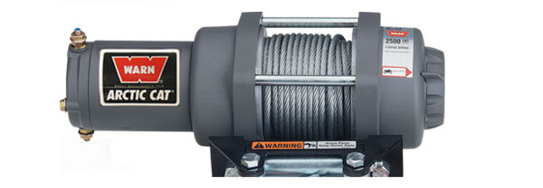
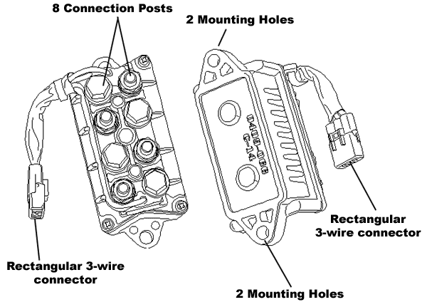
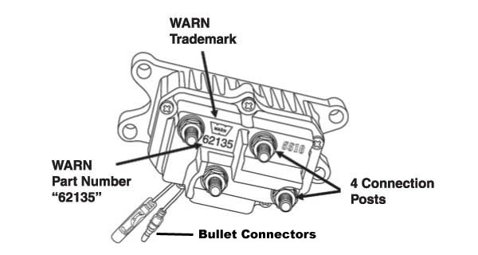
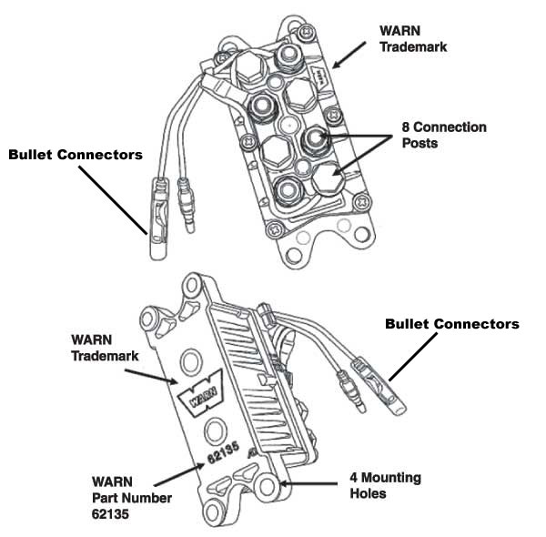

Attn: Arctic Cat ATV and Arctic Cat Winch Owners
|
The co-branded WARN/Arctic Cat 2.5ci ATV winch
is NOT part of the WARN Contactor recall. This winch kit uses
a contactor supplied by Arctic Cat and it's not interchangeable with
the WARN Contactor.
If the winch on your Arctic Cat ATV is a co-branded
WARN/Arctic Cat 3.0ci ATV winch or a WARN branded ATV winch, it may
be subject to this recall. Please scroll down to identify if
your contactor.
Please note, these contactors look very similar and you
should pay special attention to the features called out on each of
them.
|
The co-branded WARN/Arctic Cat 2.5ci winch looks similar this;

|
| |
| Arctic Cat "8 Post" contactors that are not part of the WARN recall have these features: |
| NOT RECALLED: ARCTIC CAT 8 POST CONTACTOR |
 |
|
| |
| The WARN branded "4 Post" contactor that is not part of the WARN recall, has these features: |
| NOT RECALLED: 4 POST WARN CONTACTOR |
 |
|
| |
The WARN "8 Post" contactor that IS INVOLVED in the WARN recall will have these features.
If your contactor has 8 posts, 4 mounting holes and the WARN
logo on the top and bottom, please read the recall notice and
disconnect instructions and
order your replacement contactor or contact your local dealer. |
| RECALLED: 8 POST WARN CONTACTOR |
 |
|
 ATV Contactor Recall
ATV Contactor Recall